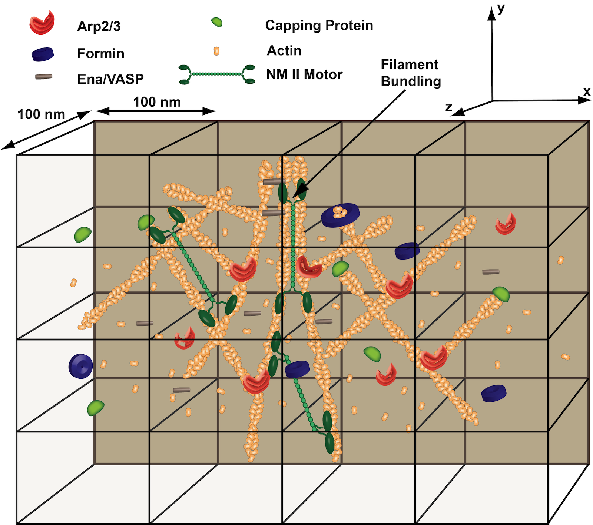

MEDYAN Overview
A brief overview of the motivation and development of MEDYAN. A comparison table of current cytoskeletal models in literature is also provided.
The cell cytoskeleton plays a key role in human biology and disease, contributing ubiquitously to such important processes as embryonic development, wound repair and cancer metastasis. The Papoian laboratory is interested in gaining deeper understanding of the physical chemistry behind these complex, far-from-equilibrium mechanochemical processes. Their approach and model, named Mechanochemical Dynamics of Active Networks (MEDYAN), is based on combining stochastic reaction-diffusion treatment of cellular biochemical processes with polymer physics of cytoskeletal filament network growth, while explicitly coupling chemistry and mechanics.
While most cytoskeletal models in literature emphasize either reaction-diffusion modeling of cytoskeletal chemistry or semi-flexible polymer chain mechanics of the constituent filaments, the MEDYAN model intimately couples the chemical processes of an active cytoskeletal network with its underlying polymer mechanics by iteratively swtiching between stochastic reaction-diffusion simulation and network mechanical equilibration (Fig 1), producing an efficient yet detailed cytoskeletal network evolution. With chemical and mechanical representations of semi-flexible polymers, cross-linking molecules, molecular motors, as well as polymer branching and severing molecules, MEDYAN allows for an explicit treatment of the key elements involved in cytoskeletal evolution (Fig 2). For a detailed description of the methodology and assumptions of this model, as well as its current capabilities, see its original paper in PLoS Computational Biology.
Papoian laboratory has developed a third-generation software package based on the MEDYAN model, to simulate growth dynamics of actin based filamentous networks in vitro and in vivo. Recent papers where MEDYAN or its predecessor, StochTools, were used can be found on the publication section of the Papoian lab page or in the publications section of this site. This package can also be extended to simulate the dynamics of any active matter network. This webpage contains documentation in usage and installation of the software, as well as source code download. See the above links for more useful information.
Fig 1: The MEDYAN simulation protocol iterates between stochastic reaction-diffusion simulation and network mechanical equilibration while updating force-dependent reaction rates.

Fig 2: A schematic of cytoskeletal species that can be included in the MEDYAN description. The polymer network is overlaid onto a compartment-based reaction-diffusion scheme.